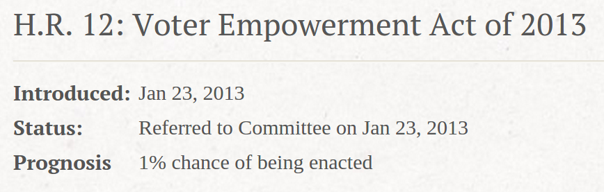
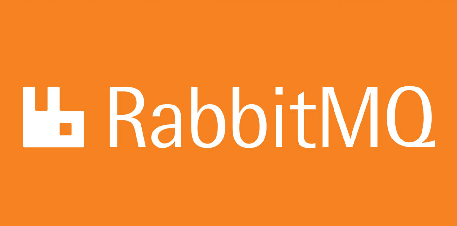
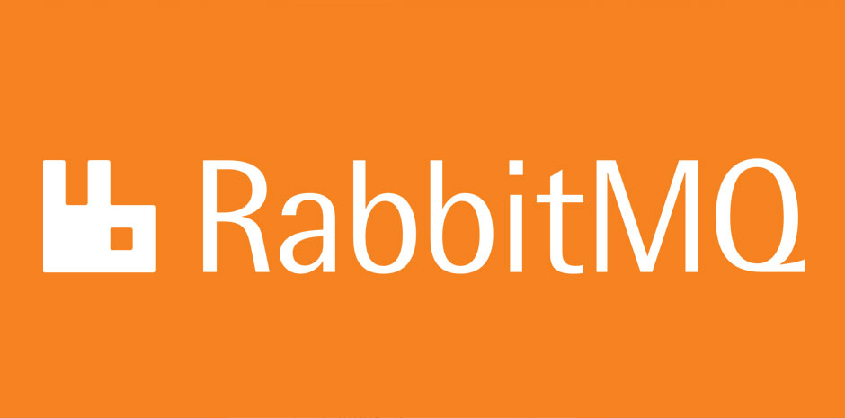

Libya
Using Python to Power Democracy
@TobiasMcNulty
recently had privilege of building Libya's electronic voter reg. system - this talk is about that
how many of you have built a web app before?
how about an SMS app?
and how many of you have worked on elections technology projects?
ok great - like many of you I'd worked on plenty of web apps, SMS apps before, but never on an election project before this project
this talk is about some of things we learned working on this project
In the US,
one of the biggest takeaways for me is that - things tumultuous in Libya, but in US, elections a mess
50 different states -> 50 different systems, sets of requirements
nationwide complexity - difficult and costly to administer
Libya SMS Voter Registration
User-centered Design
Agile, Test-driven Development
Open Source Components & Culture
Libya used SMS (text messages) for voter registration
proof of concept for Feb 2014 CDA, 1M vs 10,000
despite conflict & attempted coup (elec moved 1 mo), 500k more registrants, June 2014 CoR
due to success of SMS voter reg, forewent in-person for CoR in June (pause)
what I hope to show today: success of project due to the Libyan's user centered design, and our agile dev process
in many ways Libya unlikely candidate for this, but the country's use of open source tools and dev practices is driving innovation in elections tech today
Outline
Why SMS?
Project Overview
Open Source Culture
Challenges
US Comparisons
Q & A
Closing Remarks
short overview of talk
libya & project context - why SMS was a good fit
look more closely at open source tools, dev practices
talk about some challenges
briefly compare this to the US
time for QA, after which will close talk
Why SMS?
Election commission in Libya received a mandate from the gov't to do voter registration by SMS
but there are a number of reasons why this made sense in this context
protests throughout 2011 (ns)
led to overthrow & death of Gaddafi, 10/20/11
young democracy, many and growing challenges (pause)
large country 12x NC, 2/3rds pop
what you see here is map of libya.. (explain shading, 1000-fold difference)
-> libya big country, populations spread out, need a system that can work in this env.
Why Electronic?
Expense of in-person registration
Need to organize elections quickly
using an electronic solution saves both users time and the expense of having to open in-person registration centers
(a) setting up in-person reg expensive, esp. when population so spread out & given threat of violence
(a) given how young the democracy in Libya is, need ability schedule and prepare for elections quickly
Why Not the Web?
so the need for something other than in-person reg is clear, but why didn't the commission select another tech solution like the web?
as a web developer that's my natural inclination, but the choice becomes clear when you look at access (ns)
Access
Internet
SMS
Libya
16%
165%
Africa
21%
80%
United States
87%
96%
World
39%
97%
Sources: Wikipedia and World Bank
SMS access across Libya is incredible - according to the WB & Wikipedia, there are approxmiately 1.6 cell phones with subscriptions for every person in the country
when you compare the number of internet subscriptions to the total population, however, internet access is only about 1/10th of access to cell phone subscriptions
in pretty much every other market that you look at, SMS access still exceeds internet access, sometimes by a significant margin
SMS Summary
Widely accessible
Robust despite instability
Built-in engagement tool
in summary, SMS is widely accessible, it can operate in areas where in-person centers might not be able to open due to violence, and it also can serve as a highly scalable messaging tool to help get out the vote or inform voters of changes
Timeline
2012: Libya mandates HNEC to build SMS VR system
Sep 2013: Caktus and partners join team
Dec 2013: > 1 million registrations
Feb 2014: CDA elections (60 seats)
May 2014: additional 500K registrations
Jun 2014: CoR elections (200 seats)
the time we had to get this system online was pretty short
shortly after the fall of gadafi, Libyan gov't mandates use of SMS
Caktus and partners began developing the project just over a year ago
first usage was just several months later - in Dec
first election was held in February, and the second in June
I'd like to highlight a couple things about these two elections
February 20, 2014
Constitutional Drafting Assembly (CDA) Election
SMS voter reg first used in Feb 2014 CDA / Constitutional Drafting Assembly - proof of concept
important but smaller election
1M registered voters
Given the capacity of the SMS system, which allows for a large number of voters to be processed over a short period of time and which is a simple procedure for the majority of users, this system should be used again in future elections.
- The Carter Center
carter center wrote a report about this election - effectively blessing the use of SMS in future elections (pause)
the carter center - for those who may not be familiar - is an internationally trusted elections observer - have observed 81 elections in 33 countries over the past 25 years
know what they're talking about WRT legitimacy of elections
June 20, 2014
Council of Representatives (CoR) Election
much larger election, many more last minute adjustments
50% more registered voters
based on success of CDA, no in person period for registration
The Sponsors
elections conducted by High National Election Commission (HNEC) of Libya, support from UN
have to say - we're very proud to support this project, but it was not our idea to use SMS. something we've realized through working on this project and reflecting on our situation in the US is how incredibly forward thinking it was of Libya to use SMS for voter registration - no other system would have given them the power and flexibility that using SMS has
The Team
6 devs, 1 PM in NC
2 support staff on-site during election - data management, custom reporting, system monitoring
i was very honored to be one of those people to travel to libya to support most recent election
limited in-country tech, very luck to have Ahmed on-staff at HNEC to support project locally
native of Tripoli (capital of Libya), but earned a masters in CS from UCSF thru fulbright
photo of the operations room @ HNEC HQ on E-day
Caktus: Colin, Dan, Daryl, Elliott, Hao, Jeff, Michael, Nicole, Philip, Scott, Tobias, Victor, Vinod
Reboot: Hunter, Josh, Justin
Praekelt: Ben, JP, Simon H., Simon C., Vincent
HNEC: Ahmed, Munir, Fadia, Dr. Emad
MIS: Ian, Joe
UN: Ajay, Panto
barely fits on one slide - just to give you a sense of how many people and teams were involved - this is just for tech, not everything else that goes into an election
The Project
for these reasons - SMS voter registration in Libya was born
How do I register?
10010 is the HNEC short code
Send to 10010: 111222333444 # 12345
We respond: You are registered or with an error message
before going further I thought it'd be helpful to do a brief walkthrough of the system and its features
(explain registering)
Voter query
Send to 10010: 111222333444
We respond with your registration status
Also available via the web
Reporting
Central staff needs to monitor polling centers in real-time
Parallel Vote Tabulation (PVT)
With 1600 centers, voice phone is not feasible
Staff reports number of voters with SMS to 10050: 11007 # 3 # 932
Analytics
Fraud monitoring
Status reports
Help Desk
Bulk Outgoing SMS
Remind voters to vote
Inform voters of registration center changes
Dev Ops
for those interested in the backend server side of things...
there was a fair amount of infrastructure and testing that went into supporting this project
Testing
Automated unit tests (Travis CI)
Load testing (JMeter)
HNEC staff smoke testing
End-to-end SMS testing
Code Quality
Flake8 compliant (lint, standard best practices)
Code coverage - ~90%
Load tested with Apache JMeter - 100 SMS/sec
Will be open sourced
The System
The system itself - as we've discussed...
... is an ecosystem of user facing and admin reporting tools
majority of user-facing business logic in RapidSMS app
in addition to handling voter registration, tool also supported "polling day reporting" (pause)
which allowed poll workers (teachers in Libya) to text in count of votes throughout the day to get estimate of turnout...
...which, in turn, could be viewed by staff at HNEC headquarters throughout election day
in addition, with help from the Praekelt Foundation, used a technology called "Vumi" to integrate with mobile network operators
so, given all of these parameters...
A Culture of Open Source
one of the things I want to emphasize in particular, esp. given the conference we're at, is the wealth of open source tools and practices that went into this project
Open Source
Components, Cost, Culture
vast majority of code in Python
Django for web portion, RapidSMS for SMS business logic, Vumi for MNO connectivity
toolchain of choice at Caktus - eases creation & *reuse* of flexible, modular components throughout the app
in addition MNOs, had to integrate w/ civil registry DB to verify national IDs - using these tools made that easy
all requirements very custom, these tools fit the task well
while writing complex, custom software is never cheap, the use of these tools kept costs contained
one of my revelations - b/c subcontractors and caktus were open source devs, had common language to to communicate. We all used GitHub, made obsessive use of unit tests, and made sure we always got a code review and "ship it" on a feature branch from another dev before merging.
because we spoke this common language, establishing a shared process across many geographically dispersed teams was a non-issue
particulary important b/c every single component in this diagram we customized - and we were able to do that - in a large part - because all the pieces were open source
Challenges
as you can imagine, this project was not without challenges (pause)
scope = quite large, changes to it relatively constant -> risk that one change will impact functionality elsewhere
due to the nature of the work, a lot of ideas for features came last minute - e.g., polling reporting or broadcast SMS
while SMS coverage was generally good across Libya, there were remote areas where Sat phones were required instead. (pause)
in addition to the system itself I'd like to talk about the design process that went into this system up front
User-centered Design
again as a testament to the Libyan's dedication to this technology, much of the system was conceived by HNEC and UN prior to Caktus becoming involved
that said, holes in spec were discovered, but through our iterative design & development process they were soon uncovered and the requirements clarified
of huge importance to this process was having a team in country to work hand in hand with the Libyans and the UN - without this first hand experience of their process and workflow, project would have been incredibly difficult
small anecdote: on a number of occassions HNEC staff sent home due to security concerns, need for our process to adapt on a daily basis
Agile, Test-driven Development
after initial designs were clarified and the requirements understood by our team, changes continued to be made and new features were continually added
always a challenge, but particularlly so when software needs to be internationalized, and deadlines are tight
ensuring all code was well tested with granular unit tests made it easy to change things while minimizing the risk of breaking the code elsewhere
anecdote: The CDA election in June was originally scheduled for July, but was moved up by one month. not only did the tool itself allow HNEC to quickly schedule the election, but the unit tests and highly structured development process made the team confident that the system would be ready one month earlier than originally planned
Would this Work in the US?
briefly comparing this to US: no significant action since Help America Vote Act in 2002, established minimum standards
again, reform difficult b/c elections administered by states -> 50 different complex systems, 50 different effective clients
more recently, obama made improving elections a presidential priority, Voter Empowerment Act introduced Jan 2013 (pause)

unfortunately, according to govtrack.us, this bill has only a 1% chance of passing in current legislative environment
finally, biggest reason this might not work in the US is voter registration is tied to political parties, controlling how and when people register is strategy used by both parties to influence elections outcomes
Florida voters standing in line for early voting, just over 2 yrs ago today in 2012 election
situations like this have become so commonplace we barely think about them anymore
(pause)
Q & A
and now before i close my talk i have a few minutes for questions
Closing
in summary, libya SMS voter registration = difficult project, many challenges, both technical and programmatic
the technical success of project due in large part to use not only of open source tools, but of processes, methodologies common to OSS communities
incredibly rewarding project to work on, in many ways because of the energy and pride our counterparts in Libya brought to the project (pause)
the violence in Libya is ongoing, and I hope you will join us in recognizing and praying for our friends and family there
Apply Open Source
in terms of what to take home from this talk today, my primary hope is that I've convinced you - if you weren't already convinced - that OS is a model not only for free, publicly available software, but also for company & client projects, and when used well, projects will be more successful because of that
many opportunities to get involved - Code For America, Voter Information Project
countless OS tools & projects, find one you are passionate about and get involved - maybe by fixing a small bug, or by championing a feature you're excited about


 
